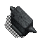
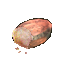
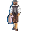
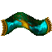
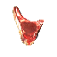
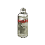

| Quest Name | What to do |
| Armor Upgrade - Silks | Find enemies in the ir dungeon that appear to be wearing a green silk Slay them and tan them in town to obtain a silk There are 15 total silks to obtain and they are based on the level of the area it was found in To find roughly the level of the area you're in, subract 1 from the amount of platinum gained when searching your kills Silk #1 - Enemy level 0 to 1 Silk #2 - Enemy level 2 to 3 Silk #3 - Enemy level 4 to 5 Silk #4 - Enemy level 6 to 7 Silk #5 - Enemy level 7 to 8 Silk #6 - Enemy level 10 to 11 Silk #7 - Enemy level 12 to 13 Silk #8 - Enemy level 14 to 15 Silk #9 - Enemy level 16 to 17 Silk #10 - Enemy level 19 to 19 Silk #11 - Enemy level 20 to 21 Silk #12 - Enemy level 22 to 23 Silk #13 - Enemy level 24 to 25 Silk #14 - Enemy level 26 to 27 Silk #15 - Enemy level 27 to 29 Each number can only be applied to your armor once Each silk will add 5 AC to your armor Visit X in the southwest IR caves to check the number of the silk and to apply it to your armor |
| Armor Upgrade - Iron breads | In the ir dungeon there are anvils in many locations These anvils come in various levels from 1 to 26  Collect Iron bread by killing Chefs and Bakers   With a bread in your left hand and the item you want to improve in your right hand, click on an anvil (Walk onto the hex) Each anvil can only be added once and Each anvil will increase the items base AC value by 2% In order to maximize your armors AC, it is recommended that you first add the nork goblets to your armor followed by the silk upgrades and lastly the anvil upgrades The following item types can have thier AC improved. Armors Robes Helms Boots Bracers Santa Gauntlets |
| Major's Sash  |
Kill and tan Deer outside of the IR town until you've collected
40 raw deer meats  Brew 2 raw deer meats with 1 stans (sold nearby) to get 1 cooked meat  + + Turn in 20 cooked meats to Hunter to get a gift (Alternately you can purchase cooked deer meat in town for 50 platinum each) Bring the gift to the Mayor of invaders refuge to receive the sash |